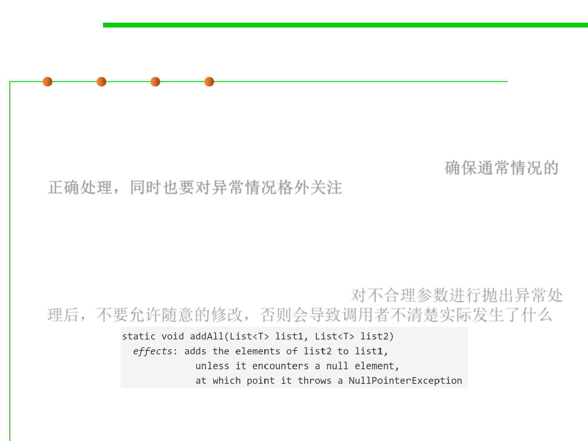

3.2 Designing Specification
The specification should be strong enough
▪ The spec should give clients a strong enough guarantee in the general
case — it needs to satisfy their basic requirements. We must use extra
care when specifying the special cases, to make sure they don’t
undermine what would otherwise be a useful method. 确保通常情况的
正确处理，同时也要对异常情况格外关注
▪ For example, there’s no point throwing an exception for a bad
argument but allowing arbitrary mutations, because a client won’t be
able to determine what mutations have actually been made. Here’s a
specification illustrating this flaw (and also written in an
inappropriately operational style): E.g.，对不合理参数进行抛出异常处
理后，不要允许随意的修改，否则会导致调用者不清楚实际发生了什么
▪ If a NullPointerException is thrown, the client is left to figure out on
their own which elements of list2 actually made it to list1 .